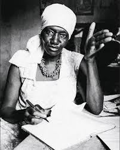
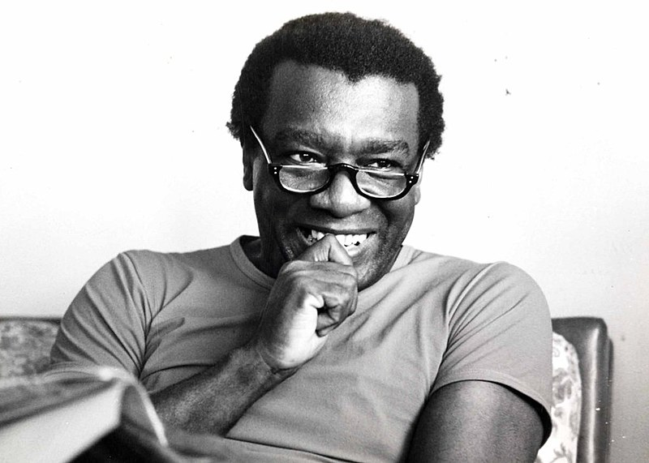
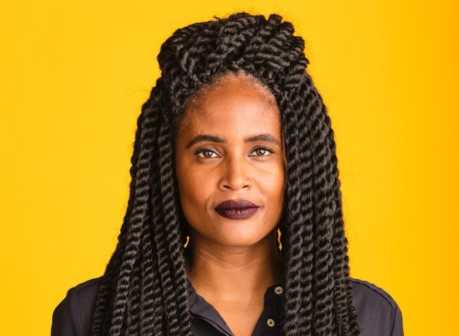
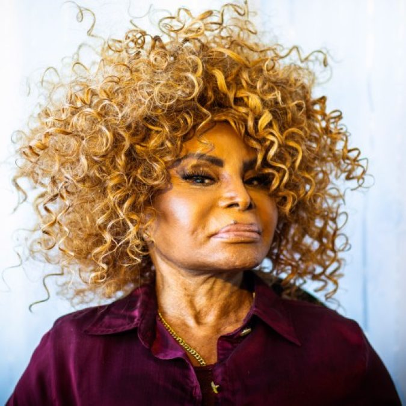
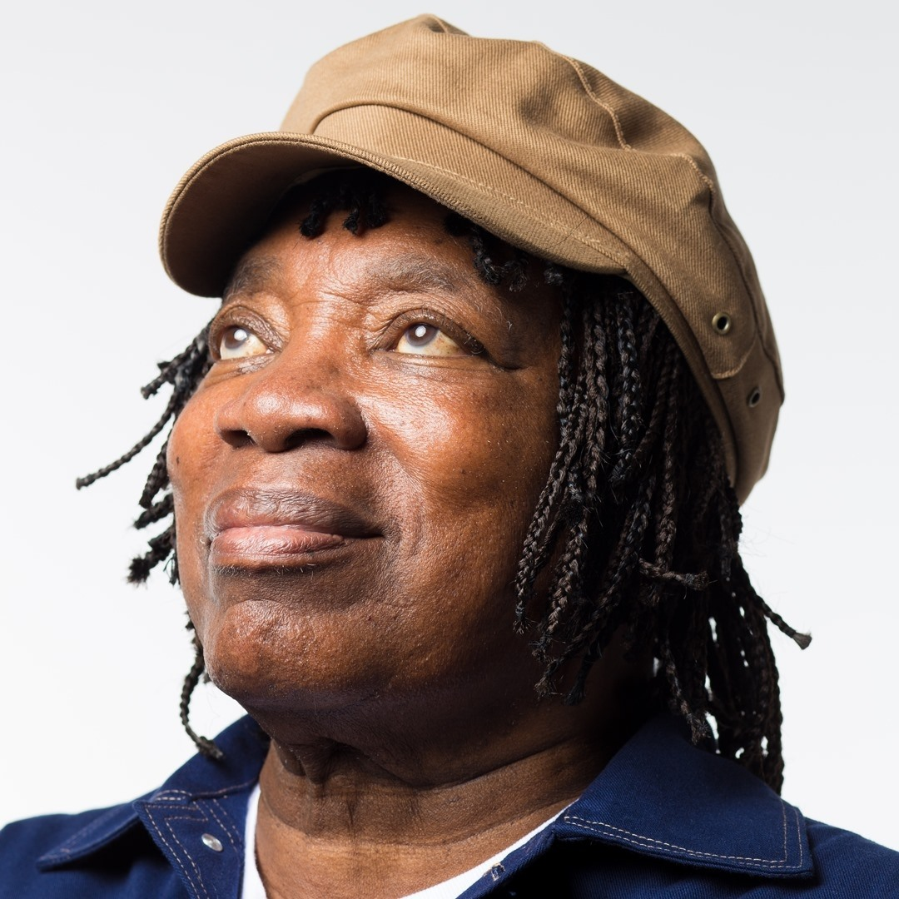
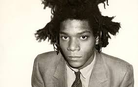
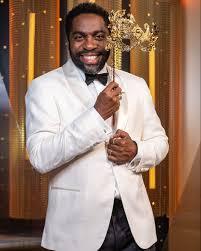
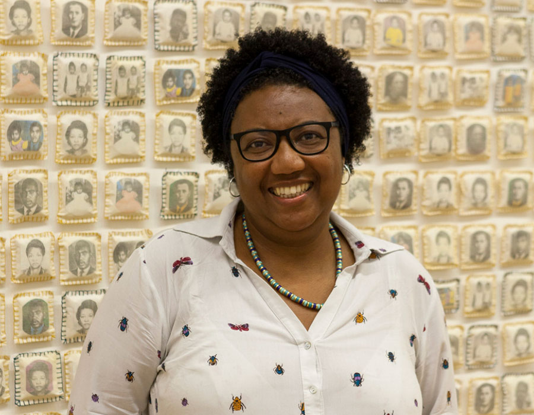

O QUE VOCÊ
TEM FEITO PARA
Acabar com o racismo?
Prefácio
Abstract
Objetivo
O objetivo deste trabalho é evidenciar como a comunicação dentro da escola contribui para a educação antirracista. Para isso, o trabalho utiliza o levantamento de dados e a observação direta como métodos principais.
Objetivo
O objetivo deste trabalho é evidenciar como a comunicação dentro da escola contribui para a educação antirracista. Para isso, o trabalho utiliza o levantamento de dados e a observação direta como métodos principais.
Objetivo
O objetivo deste trabalho é evidenciar como a comunicação dentro da escola contribui para a educação antirracista. Para isso, o trabalho utiliza o levantamento de dados e a observação direta como métodos principais.
Objetivo
O objetivo deste trabalho é evidenciar como a comunicação dentro da escola contribui para a educação antirracista. Para isso, o trabalho utiliza o levantamento de dados e a observação direta como métodos principais.
Sumário
Apresentação
Racismo estrutural
Racismo na Escola
Letramento racial
Discurso e Poder
Glossário
Representatividade importa
Conheça a cultura negra
Conclusão
04
05
06
07
08
09
10
11
15
Apresentação
O racismo é um fenômeno histórico e social que ainda persiste no Brasil, contribuindo para desigualdades raciais profundas. Apesar da grande diversidade cultural do país, essas desigualdades continuam presentes, muitas vezes de forma sutil e naturalizada nas relações sociais. Nesse contexto, a escola tem um papel essencial na formação de cidadãos críticos, tornando indispensável o debate sobre o racismo no ambiente escolar.
Racismo
Estrutural
conceito
O racismo estrutural refere-se à forma como o preconceito está enraizado nas estruturas da sociedade, influenciando o acesso a direitos, oportunidades e condições de vida. Segundo Djamila Ribeiro, o racismo não é apenas uma atitude individual, mas um sistema de opressão que organiza a sociedade e produz desigualdades. Portanto, o racismo pode existir mesmo sem intenção e está presente em instituições e práticas sociais, afetando principalmente populações negras e indígenas. Além disso, como apontam materiais institucionais, ele também se manifesta de forma sutil, por meio de discursos e comportamentos cotidianos.
reflita
Você reconhece como o racismo estrutural pode influenciar o seu cotidiano?
racismo na
escola
De acordo com a pesquisa realizada com alunos do 6º e 9º ano da escola SESI Milton Santos, uma parcela significativa dos estudantes já presenciou situações de racismo, o que evidencia sua presença no cotidiano escolar.
formas explícitas
- Ofensas diretas
- Xingamentos
- Discriminação intencional
formas explícitas
- Piadas naturalizadas
- Apelidos relacionados à aparência
- Comentários sobre cabelo ou cor da pele
- Exclusão em atividades
Um ponto importante é que muitas dessas atitudes são tratadas como
“brincadeiras”
, o que dificulta sua identificação como racismo.
Essa pesquisa revela que muitos já presenciaram situações desse tipo, mas nem todos se sentem seguros para denunciar.
letramento racial
discurso e poder
glossário
representatividade importa
CONHEÇA A
CULTURA NEGRA
Ao conhecer e valorizar os artistas negros, você entra em contato com diferentes narrativas e formas de expressão historicamente silenciadas. Nas próximas páginas, você encontrará sugestões para conhecer, apoiar e valorizar a produção artística negra.
REFLEXÃO
Você já parou para pensar se consome arte negra no seu dia a dia?
CULTURA NEGRA
NA LITERATURA

Carolina Maria de Jesus (1914-1977) foi uma escritora brasileira que retratou a vida na favela. Em Quarto de Despejo, apresenta um diário sobre fome, desigualdade e resistência.
Milton Santos (1926-2001) foi um geógrafo brasileiro que refletiu sobre desigualdades. Em Por uma Outra Globalização, propõe uma sociedade mais humana.


Djamila Ribeiro em Pequeno Manual Antirracista, propõe reflexões e ações contra o racismo.
CULTURA NEGRA
NA MÚSICA

Elza Soares (1930-2022) foi uma cantora brasileira icônica cuja obra aborda dor, resistência e superação, com músicas que denunciam o racismo e celebram a força da população negra.
Milton Nascimento conhecido por sua voz marcante e por composições que misturam MPB, jazz e influências regionais. produziu grandes álbuns como Clube da Esquina, referência na música brasileira.


Duquesa Jeysa Ribeiro, mais conhecida como Duquesa, é uma artista brasileira que trabalha principalmente com rap e trap. Ela canta sobre autoestima, vivências de uma mulher negra, relações, liberdade e autoconhecimento, sendo considerada uma das artistas que estão impactando e ajudando a transformar o rap feminino no Brasil.
CULTURA NEGRA
EM OUTRAS ARTES

Jean-Michel Basquiat (1960–1988) foi um artista plástico norte-americano. Sua arte crítica ao racismo e ao colonialismo tornou-se referência na cultura contemporânea.
Lázaro Ramos é um ator, diretor e escritor brasileiro reconhecido por sua atuação no cinema, teatro e televisão. Lázaro é autor do livro Em Na Minha Pele, no qual compartilha reflexões pessoais sobre sua trajetória, identidade racial e experiências de vida.


Rosana Paulino é uma artista visual brasileira conhecida por obras que investigam a memória, o corpo negro e os efeitos históricos da escravidão no Brasil. Sua produção combina costura, desenho, fotografia e instalações para questionar como a população negra, especialmente as mulheres, foi representada e silenciada ao longo do tempo.
Conclusão
O racismo permanece como uma realidade no cotidiano e no ambiente escolar, manifestando-se tanto de forma explícita quanto em práticas naturalizadas. Seu enfrentamento exige não apenas reconhecimento, mas também atitudes conscientes e posicionamento crítico. Nesse contexto, a escola tem papel fundamental na promoção do respeito e da valorização da diversidade. Conclui-se que a luta histórica dos movimentos negros avança com conquistas ao longo dos anos. Essa deve ser uma luta de todos, para a construção de uma sociedade igualitária e justa.
Numa sociedade racista, não basta não ser racista. É necessário ser antirracista.”
Ângela Davis
Colaboradores
- Ana Luysa Rodrigues Souza
- André Luiz Guimarães
- Clara Vitória Santos
- Daniel Richard Vieira
- Eloah Veiga Queiroz
- Gabriela Santos
- Heloise Dantas
- Isabela Andrade
- João Pedro Failla
- Maria Luiza Nascimento
Orientadores
Carla Soares Língua Portuguesa
Jéssica Arnaut Informática para internet
Thais Barbosa Língua Inglesa
Natália Dorneles Artes